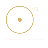
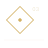

HUẾ · Three ways to read the city
Suggested routes
Not a timetable. These are thematic sequences: start with an architectural idea, follow it through the city, and leave room for the landscape to change the plan.
01 · Imperial axis
02 · River line
03 · Royal landscape
01
Imperial threshold · Inside the citadel
Through the ceremonial axis
- Mode
- On foot
- Stops
- 4 stops
- Focus
- Thresholds & court space
- Ngọ MônBegin with the monumental southern gate and read the complex through its strongest threshold.
- Imperial City courtyardsMove from monumental frontage into a sequence of axes, open courts, walls, and rooflines.
- Thế MiếuShift from ceremonial scale toward the ancestral spaces of the Nguyễn dynasty.
- Hiển Lâm CácFinish the sequence with a vertical counterpoint to the long horizontal logic of the citadel.
02
River spine · Street + river
Follow the Perfume River

- Mode
- Walk + onward ride
- Stops
- 5 stops
- Focus
- Water & living city
- Trường Tiền BridgeUse the bridge as a line across the landscape rather than a single destination.
- South-bank riverfrontLet reflections, tree cover, and the long horizon reset the scale after the imperial core.
- Đông Ba MarketMove into the density of everyday trade, food, colour, and contemporary city life.
- Perfume River edgeReturn to the water and read the city as a chain of landmarks rather than isolated monuments.
- Thiên Mụ PagodaExtend the sequence westward, where architecture and the river become part of the same landscape.
03
Beyond the walls · Wider landscape
Read the royal landscape

- Mode
- Vehicle between sites
- Stops
- 3 stops
- Focus
- Royal architecture & terrain
- Minh Mạng TombStart with a composition where architecture, water, gardens, and terrain are read as one ordered landscape.
- Khải Định TombContrast that openness with a denser, steeper, and more ornamented architectural experience.
- Tự Đức TombClose with a quieter landscape sequence where pavilions, trees, and water slow the rhythm again.